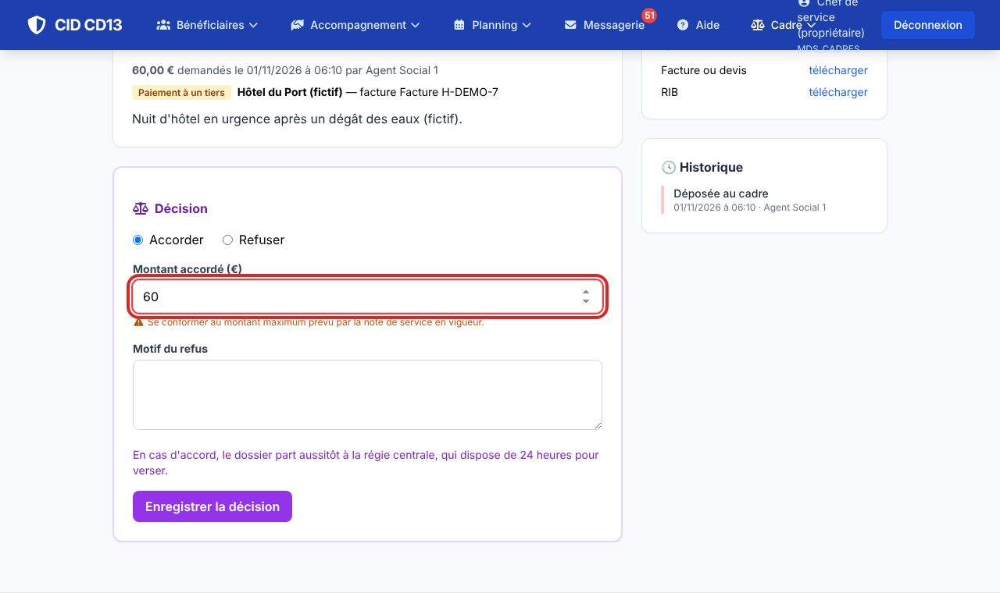
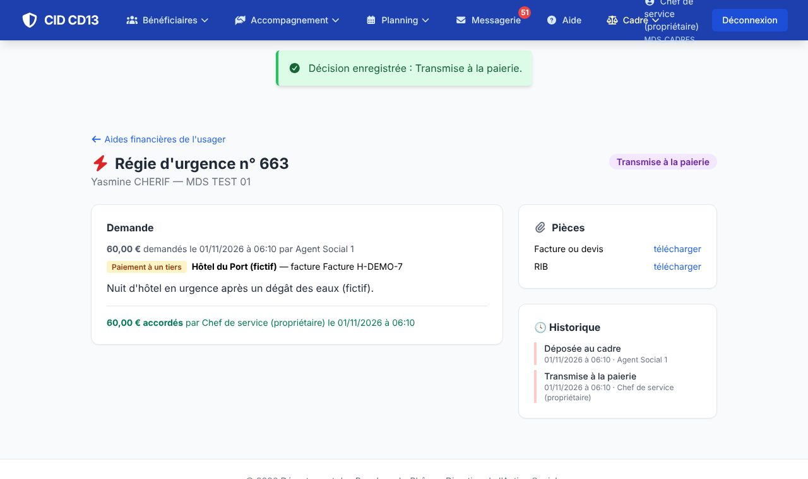
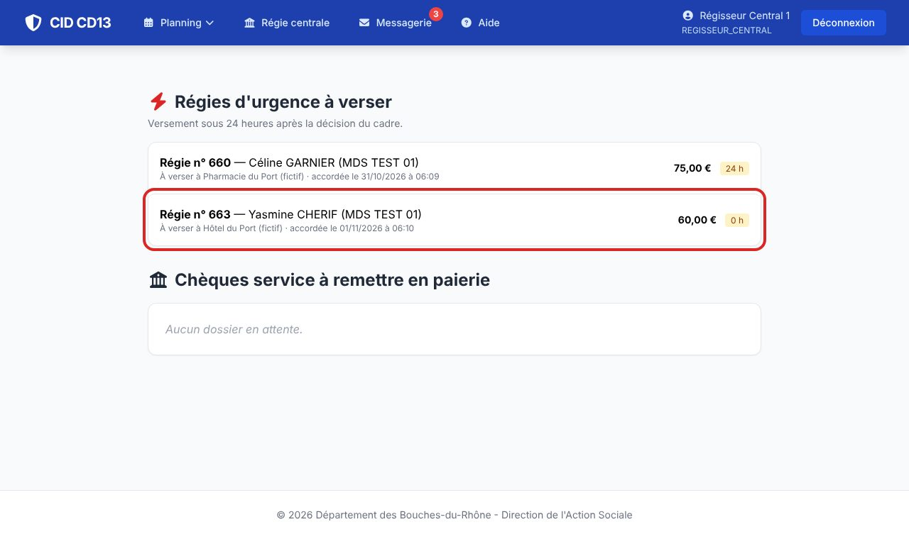
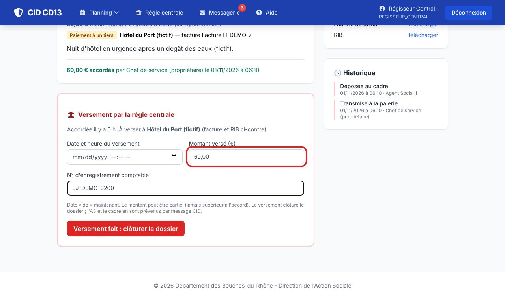
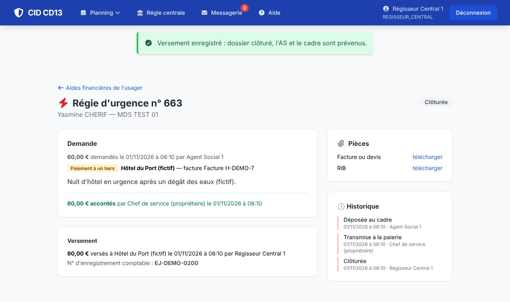

1Décider (cadre)


- Ouvrez la demande (tableau du cadre ou message CID) : Accorder avec le montant, ou Refuser avec le motif, puis Enregistrer la décision.
- En cas d'accord, le dossier est transmis à la paierie : le régisseur central est prévenu.
Se conformer au montant maximum prévu par la note de service en vigueur : CID avertit s'il est dépassé.
2Verser (régisseur central)



- Menu Régie centrale : les régies à verser, avec le temps écoulé depuis l'accord (24 heures au plus), et les chèques service à remettre en paierie.
- Ouvrez la régie : facture et RIB du tiers sont à droite. Indiquez la date et l'heure du versement (vide : maintenant), le montant versé (partiel possible, jamais supérieur à l'accord) et le n° d'enregistrement comptable.
- Cliquez sur Versement fait : clôturer le dossier : le travailleur social et le cadre sont prévenus par message CID.
Bon à savoir
- Les étapes (décision, versement) alimentent les statistiques des aides de la MDS.
Et ensuite ?
Cliquez sur une image pour l'agrandir. Le cadre rouge montre où cliquer ou quoi remplir. Toutes les données affichées sont fictives.